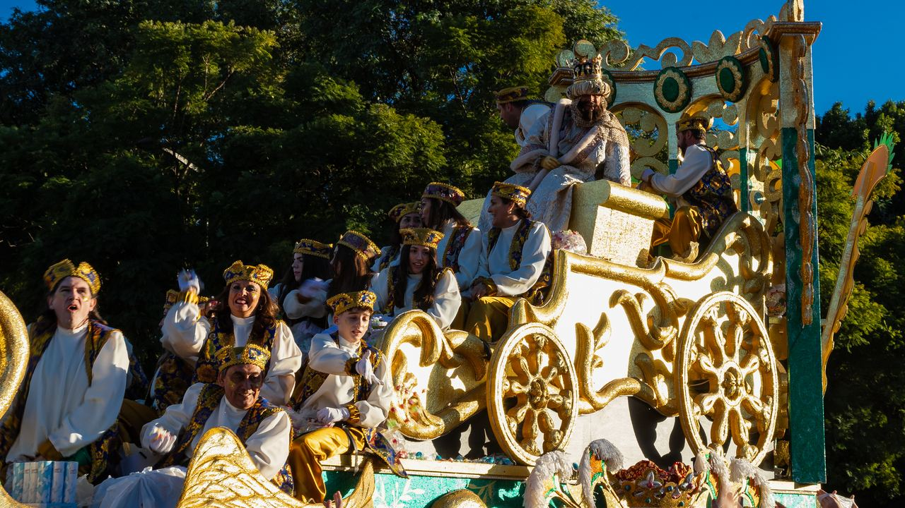
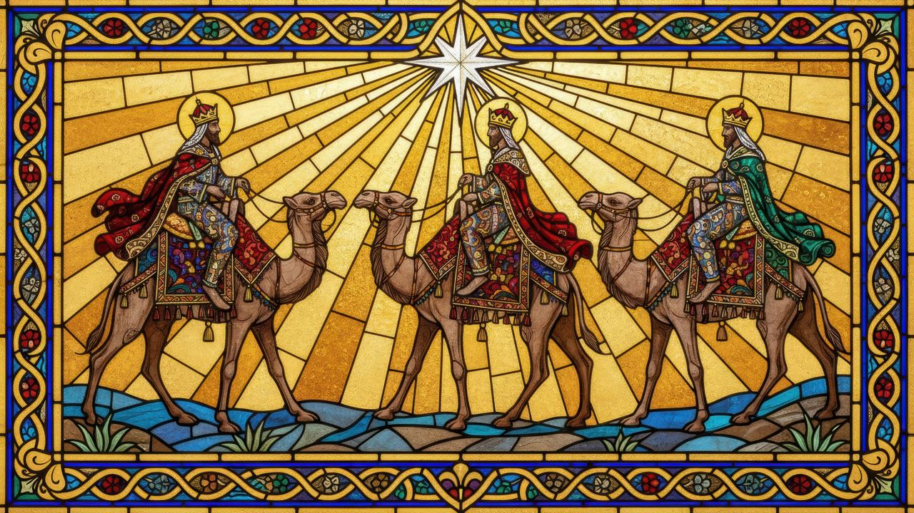
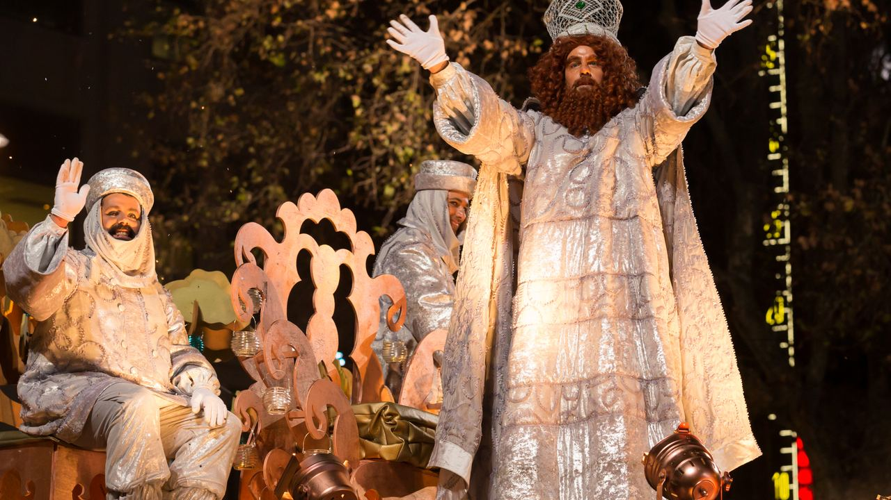
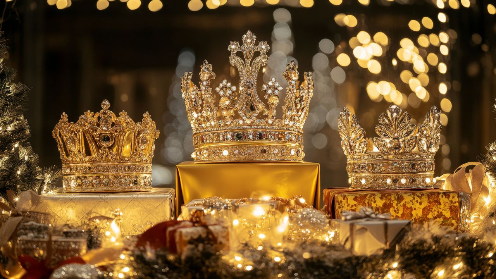
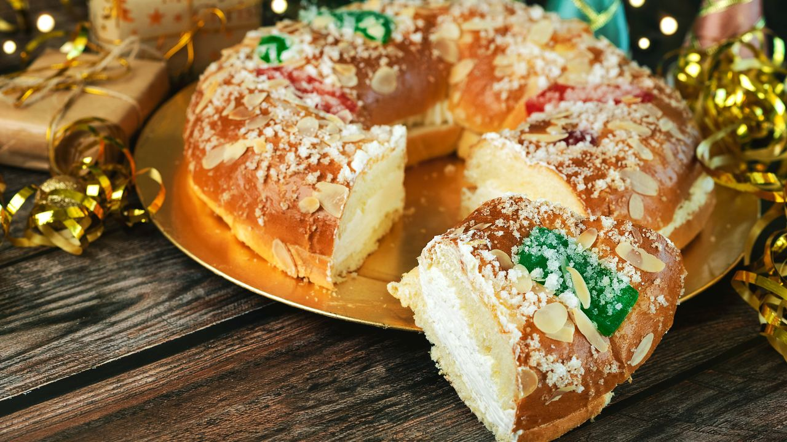
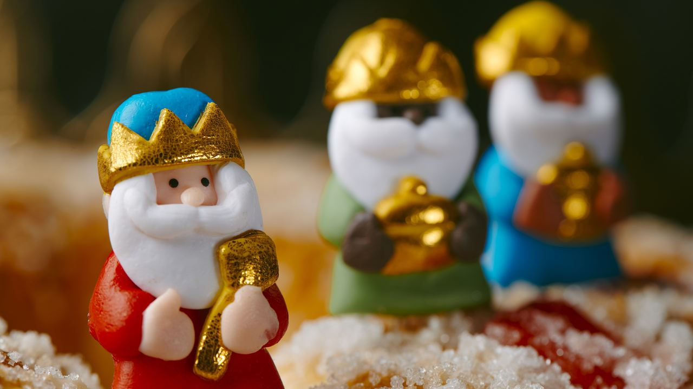

Vivir en España · Tradiciones
Los Reyes Magos en España
 Por Anita Orłowska · · actualizado · 3 min de lectura
Por Anita Orłowska · · actualizado · 3 min de lectura

En resumen: En España el gran día de los regalos para los niños es el 6 de enero, el Día de Reyes. La tarde del 5 casi todos los municipios celebran su cabalgata, en la que Melchor, Gaspar y Baltasar lanzan caramelos al público. Los niños dejan los zapatos preparados y por la mañana encuentran los regalos (o carbón si se han portado mal). Las familias comparten el roscón de Reyes con figurita y haba escondidas. El 6 de enero es festivo nacional, y al día siguiente empiezan las rebajas.
Quien llega a vivir a España descubre que las fiestas navideñas duran mucho, porque terminan con el día más emocionante para los niños: la llegada de los Reyes Magos.
Así se vive el Día de Reyes y por qué es tan importante para las familias.
¿Quiénes son los Reyes Magos?

Melchor, Gaspar y Baltasar son los magos que, según el relato cristiano, siguieron una estrella hasta Belén con oro, incienso y mirra. En España traen los regalos a los niños la noche del 5 de enero, víspera de la Epifanía. En las semanas anteriores, los niños escriben su carta al rey favorito y la echan en buzones especiales o se la entregan a los pajes reales en los centros comerciales.
La cabalgata de Reyes

La tarde del 5 de enero, municipios de todos los tamaños celebran su cabalgata: los Reyes recorren las calles en carrozas o camellos, con bandas, bailarines y pajes, lanzando caramelos a los niños. Lleve una bolsa y llegue pronto para coger sitio. La de Alcoy, en el interior de Alicante, es una de las más antiguas de España, y las de Madrid y Málaga, de las más grandes.
Los regalos del 6 de enero

Antes de dormir, los niños dejan los zapatos junto a la puerta o la ventana, a menudo con agua o algo de comer para los camellos. Por la mañana encuentran los regalos. A los que se han portado mal, según la tradición, les traen carbón, que hoy suele ser de azúcar. Muchas familias también hacen algún regalo en Navidad, pero el gran día sigue siendo el 6 de enero.
El roscón de Reyes

El desayuno o la merienda del 6 de enero no se entiende sin el roscón de Reyes, un bollo en forma de rosca con agua de azahar y fruta escarchada, a menudo relleno de nata. Esconde dos sorpresas: una figurita, que trae suerte, y un haba, y a quien le toca, por tradición, paga el roscón del año siguiente. Las pastelerías aceptan encargos con días de antelación.
Qué supone en el día a día

El 6 de enero es festivo nacional: oficinas, bancos y la mayoría de tiendas cierran, y la víspera hay mucho movimiento de compras y cabalgatas. Los colegios vuelven uno o dos días después. El 7 de enero empiezan las rebajas. Para las familias recién llegadas, ir a la cabalgata es una de las formas más fáciles de sentirse parte del pueblo. Vea también la Navidad en España y el Año Nuevo en España.
Preguntas frecuentes
¿Cuándo es el Día de Reyes?
El 6 de enero. Las cabalgatas son la tarde del 5.
¿Es festivo el 6 de enero en España?
Sí, es festivo nacional y la mayoría de tiendas, oficinas y bancos cierran.
¿Qué es el roscón de Reyes?
Un bollo en forma de rosca con fruta escarchada que se come el 6 de enero. Esconde una figurita de la suerte y un haba: quien la encuentra paga el roscón del año siguiente.
¿Los niños reciben regalos en Navidad o en Reyes?
Tradicionalmente el 6 de enero, de los Reyes Magos. Hoy muchas familias también hacen algún regalo en Navidad.
Unas fiestas para compartir
Las tradiciones son parte de lo que hace la vida aquí tan cálida. Si piensa pasar el invierno, o todos los inviernos, junto al mar, escríbanos y le ayudaremos a encontrar su casa.
Fuentes: Spain's official tourism portal – Three Kings Parade · BOE – National public holidays · Alcoi Tourism – Cabalgata de Reyes